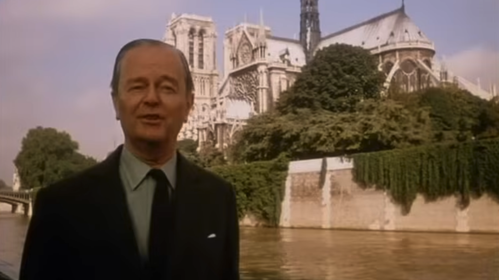
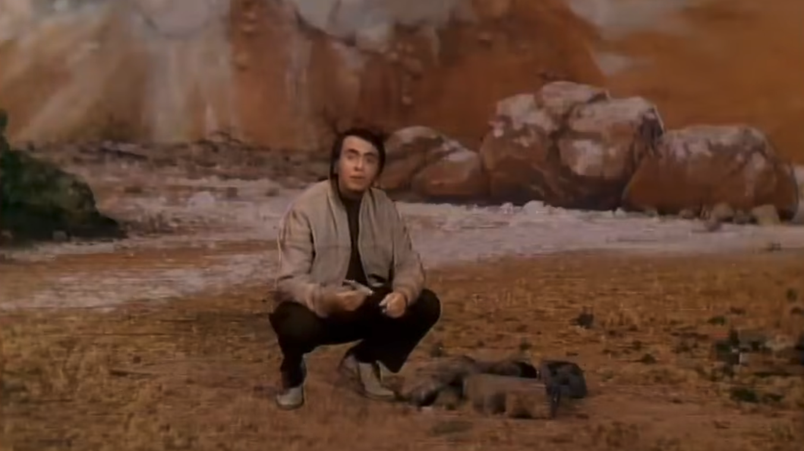
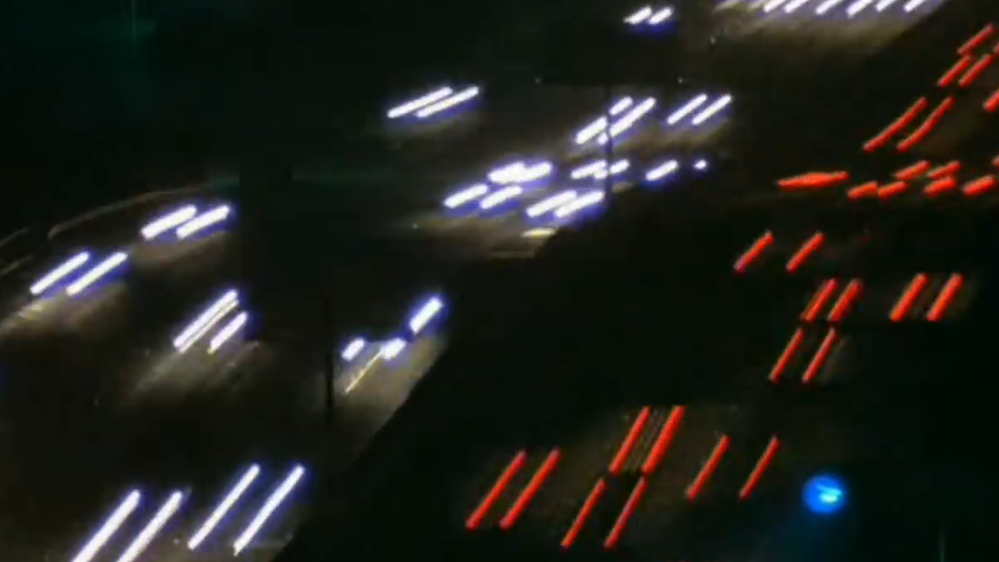
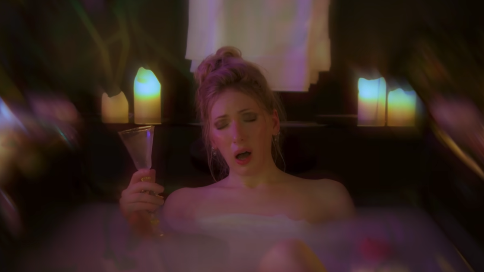

Ways of Seeing
John Berger
An exploration of how visual art is perceived, focusing on power, context & representation in images.
Reading ←→ Viewing ←→ Listening
This reading list is an introduction to ideas around media & culture, & to the ways they can guide & expand our understanding of graphic design. For many of you, much of this will be brand new, & that shouldn’t worry you. You are here to encounter new ideas, perspectives & ways of thinking.
Graphic design isn’t just about arranging type & image for an audience; it is shaped by culture, technology, politics & media.
The books, films, TV shows, podcasts & other material gathered here are intended to help you look more closely: to notice where ideas & images come from, what they are doing, who they are for, & how their meaning can shift between different people, places & contexts.
Not everything here is directly about graphic design, & that is deliberate. Graphic design as a practice encompasses a broad range of ideas, media & processes.
This is reflected in the reading list. Although these works may not specifically address graphic design, each offers a way of thinking about the cultural, visual, political or technological contexts in which design exists.
The broader your frame of reference, the more you are able to question, make connections, reason through ideas & develop your own position. You are expected to engage with this reading list in order to understand the content & context of the course.
John Berger
An exploration of how visual art is perceived, focusing on power, context & representation in images.

Kenneth Clark
A documentary series tracing Western art, culture & history, highlighting human creativity & achievement.

Robert Hughes
A series exploring modern art & its cultural impact from 19th-century painting to 1980s performance art.

Carl Sagan
An exploration of the universe & our place within it, blending science, history & philosophy.

Godfrey Reggio
Film about nature & technology, illustrating humanity’s impact on the planet.

Natalie Wynn
A series exploring philosophy, culture & history in relation to contemporary events & issues.

Adam Curtis
How psychology, marketing & politics have shaped individualism & consumer culture.

Blindboy
Podcast blending storytelling, cultural commentary & performance to comment on contemporary discussions.

Mindy Seu
A keynote lecture exploring publishing as a collaborative practice, considering how communities, networks & shared structures shape the circulation of ideas.
L. Maurer, E. Paulus, J. Puckey & R. Wouters
A manifesto advocating a design process shaped by context, collaboration & changing conditions.
Neil Postman
A chapter examining the relationship between society, information & the systems through which information circulates.
Raymond Queneau
One story retold in many different styles, demonstrating how form & language can transform meaning.
Ruben Pater
An introduction to how politics, culture & power are embedded within everyday visual communication.
Walter Benjamin
An essay examining how mechanical reproduction changes the meaning, value & cultural role of art.
Marshall McLuhan & Quentin Fiore
An experimental book exploring how the form of a medium shapes the way messages are understood.
Jost Hochuli
A concise examination of how letters, words, spacing & lines work together to make text legible & visually coherent.
David Reinfurt
An introduction to graphic design through typography, Gestalt & interface, combining historical examples with exercises in visual thinking.
Francis Close Hall Campus Library
741.6 REI
Alan Fletcher
A collection of images, quotations, ideas & observations exploring perception, language & the relationship between words & images.
Francis Close Hall Campus Library
741.601 FLE
Ursula K. Le Guin
An essay proposing alternative ways of constructing stories, shifting attention away from heroes, conflict & conquest towards gathering, connection & collective life.
Stuart Hall
A framework for understanding how media messages are constructed, circulated & interpreted differently by different audiences.
bell hooks
A collection of essays exploring education as a space for questioning assumptions, challenging power & developing independent critical thought.
Legacy Russell
An exploration of identity, technology & digital culture that treats disruption, error & the glitch as spaces for questioning established categories.
Look closely. Make connections.